Rock z hlubin stínů
Tvrdé kytary, syrové texty a energie, která tě smete. STÍNOVLAS hraje rock naplno a bez kompromisů.
Poslouchat
Tvrdé kytary, syrové texty a energie, která tě smete. STÍNOVLAS hraje rock naplno a bez kompromisů.
PoslouchatSTÍNOVLAS je česká autorská rocková kapela, která spojuje tvrdé kytary, české texty a energickou živou show. Tvoří ji muzikanti s více než pětiletou zkušeností s vystupováním. Hrajeme vlastní tvorbu na festivalech, koncertech a kulturních akcích po celé České republice. Autorem, zakladatelem a zpěvákem kapely STÍNOVLAS je Marek Štolle.
Další z projektů je NÁŘEZÁKFEST.COM. Smyslem festivalu je dát prostor autorským i zábavovým kapelám a užít si jedinečnou atmosféru.
Festival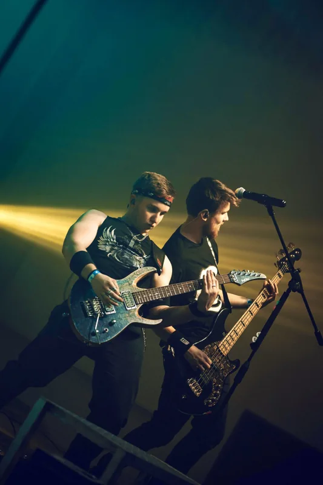
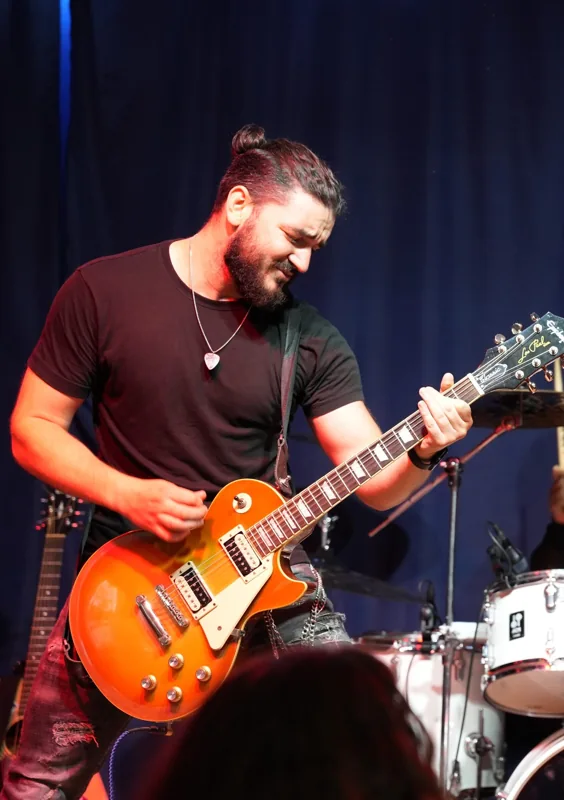
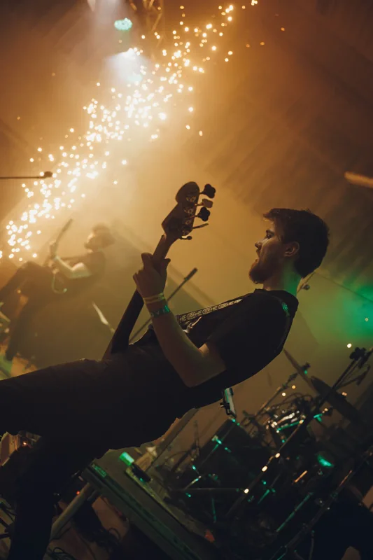
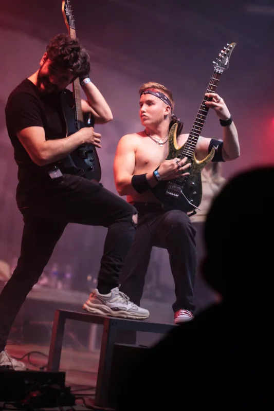
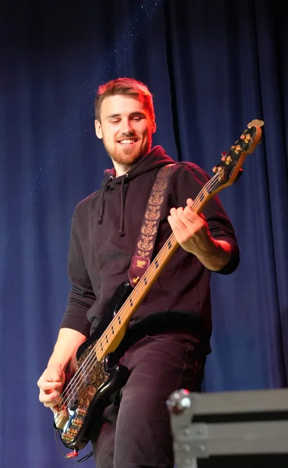
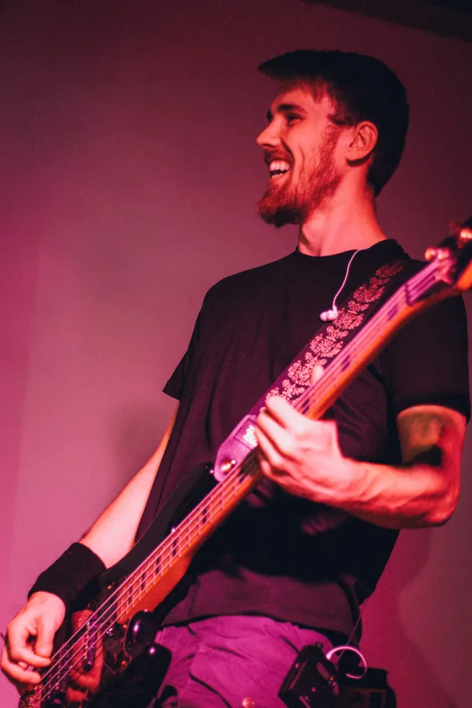
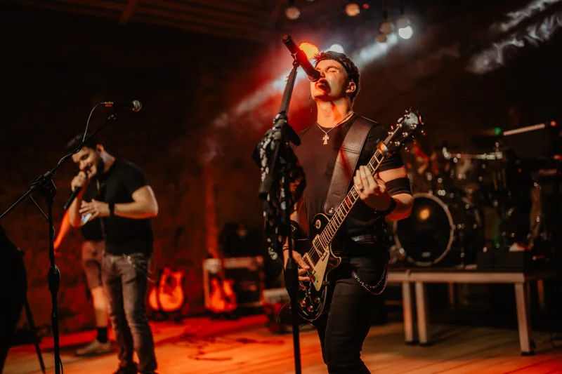
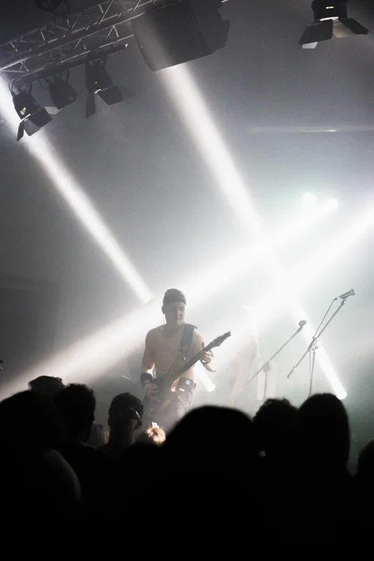
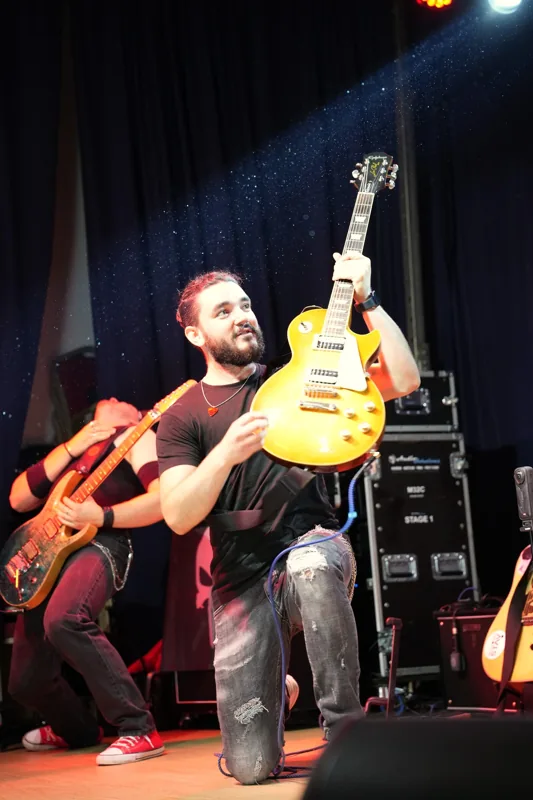
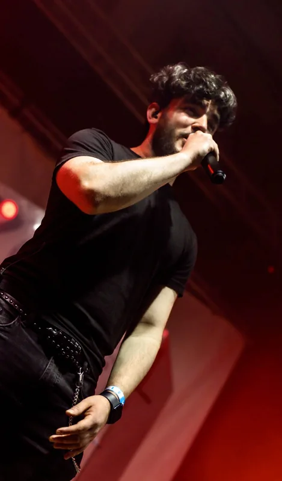
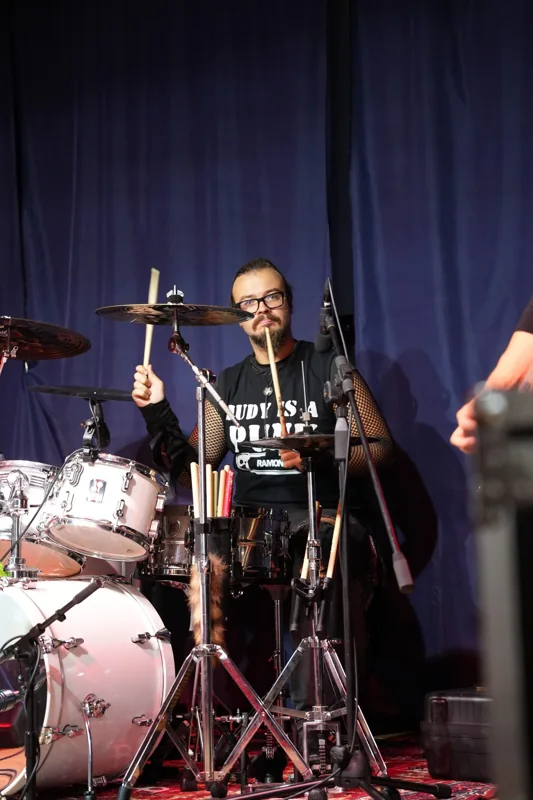